All references to Device Guardian also apply to Device Guardian Access Management within this guide.
Overview
The web portal dashboard provides a centralized to view of devices, access points (AP) and sites across an organization, with the ability to take action to track devices. It can be viewed through the web portal or the device client app, accessible by administrators and managers. Managers are granted access to data specific to their assigned site. Administrators are granted access to data across all sites in the organization and license information.
Device Guardian supports a single session for each user login and does not support multiple login sessions. If an admin or manager logs in to multiple browser sessions or devices using the same user login, the login sessions are automatically terminated after a period of time.
The web portal also provides data reports to administrators. Daily device summary reports can be sent to designated recipients.
Administrator Dashboard
Welcome Dashboard
The Welcome Dashboard presents a graphical overview of missing and found devices at both company-wide and individual site levels, license information, and access to the latest release notes.
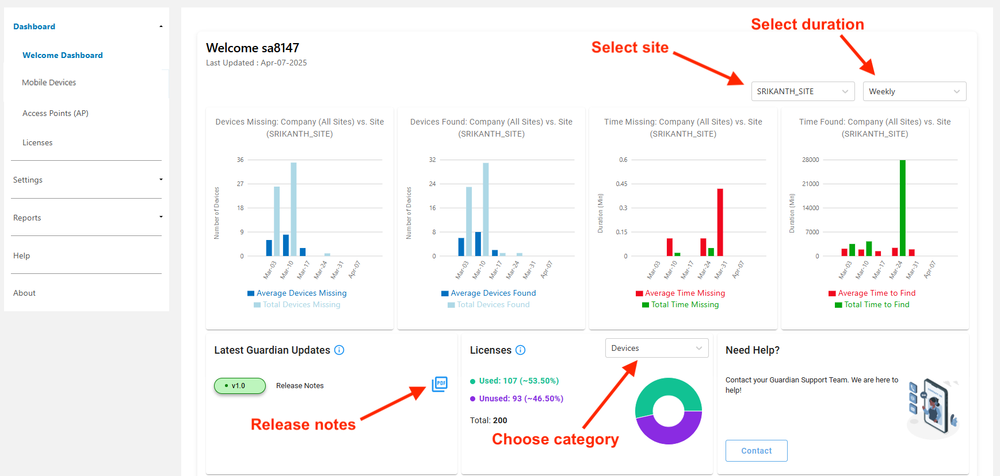
Graphs - Provides a snapshot of Device Guardian's effectiveness, illustrating the speed of device recovery and the number of lost devices successfully located, based on the selected site and time period:
- Time Frames:
- Weekly - Displays data from the past 6 weeks on a weekly basis, up to the day before the current date. Each data point represents a distinct week within this timeframe.
- Monthly - Displays data from the past 6 months on a monthly basis, up to the day before the current date. Each data point represents a distinct month within this timeframe.
- Graph Details:
- Graphs 1 and 2 - Shows trends for the quantity of missing (Graph 1) and found (Graph 2) devices at both the overall company level and individual site level. This allows for a comparison of a site's performance against the company average when a site is selected. Hover over the data to view the specific quantity for each.
- Graphs 3 and 4 - Displays trends for the average duration devices remain missing (Graph 3) and the average duration to locate a device (Graph 4). A device is considered missing from the moment it is marked "To Be Found" until it transitions to another state (e.g. "Found"). The duration to find a device begins when "Start Finding" is selected and ends when the device is found. Hover over the data to view the specific time (in minutes) for each.
Latest Guardian Updates - Shows the latest 3 versions of Device Guardian along with access to their release notes. Click the .PDF icon for the corresponding version to view the release notes.
Licenses - Displays a donut chart showing Used, Unused, and Total licenses available. The dropdown menu filters by license type:
- Devices - Mobile devices and kiosks.
- Accessories - Accessories that connect to mobile devices, such as Bluetooth scanners.
Need Help - Offers quick access to support resources. The Contact button opens the Device Guardian support contact page.
Mobile Devices
Mobile Devices displays a table of devices with access to device information details. Devices are listed based on the following drop-down selections:
- All Devices - Either lists All Devices within the organization, filters Unassigned Devices that are not assigned to any site, or filters devices based on the site selected.
- All States - Lists devices across all states, or filters the list based on the state selected: Low Battery, Missing, Charging, Discharging, Found, Decommissioned, Disconnected, Checked Out, or Idle.
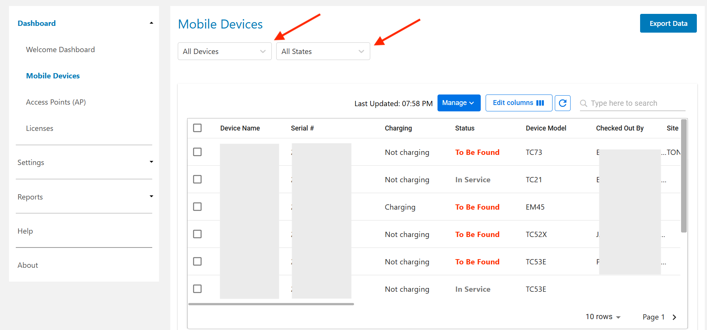 Mobile Devices - Admin Dashboard
The table displays the list of filtered devices based on the two drop-down selections with the following information:
- Device Name - Assigned friendly name to the mobile device for ease of identification e.g. based on department or role.
- Serial # - Serial number of the mobile device.
- Device Model - Model number of the device.
- Site - Assigned site of the mobile device.
- Status - Status of the mobile device: In Service, To Be Found, Finding, Found, Cannot Find, Decommissioned, Unlicensed
- Accessory - (Optional) Model name and serial number of the accessory (e.g. Bluetooth scanner) separated by an underscore (_). Track Bluetooth Scanners must be enabled under Settings. The text color indicates the accessory status in relation to the mobile device:
- Green - The accessory is paired and connected to the device.
- Red - The accessory is paired but disconnected from the device. This can occur in any of the following scenarios: the accessory is idle, the device or accessory is rebooted, or the accessory disconnects from the device.
- Black - The accessory was previously paired and connected with the device but is no longer paired and connected, e.g. when the accessory is placed on a charged cradle. As a result of being unpaired, the accessory is removed from the My Bluetooth Scanner section of the device client app.
- Map View - A GPS pin icon is displayed if the GPS device location is known. Click on the pin icon to display the GPS coordinates and mapped location of the device.
- Location - Device location based on the access point (AP) it is connected to. Displays either the AP friendly name or MAC address (if AP friendly name is not assigned)
- Checked Out By - If Identity Guardian is in use, it displays the current user that checked out the device.
- Last User - Last user that checked out the device.
- Connection:
- Connected - Device is connected to the server
- Not Connected - Device previously connected to the server and is now disconnected due to no communication with the server for approximately 12 minutes or longer
- Battery % - Current battery level of the mobile device.
- Charging - Charging (device is connected to a power supply and charging) or Not Charging (device is not connected to a power supply).
- Last Check In - The elapsed time since the last device check-in, if Identity Guardian is in use.
- Checked Out At - Time stamp when the device was last checked out, if Identity Guardian is in use.
- Last Reported - Time stamp the device last reported to the server.
To add, modify, and delete devices, see Manage Devices.
In the mobile devices table, select one or more devices to take action by ticking the checkbox next to the device name. The Actions button is visible, containing a drop-down menu of actions to take.
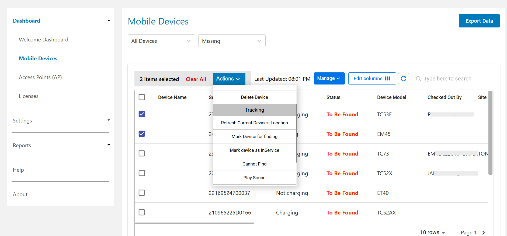 Select Actions for Selected Device(s)
Select the desired action based on the Edit or Tracking category (options may vary depending on the state of the device):
Edit:
- Site - Assign the device to a selected site.
- Device Name - Change the user friendly device name.
- Delete Device - Delete the device record.
Tracking:
- Request Current Device's Location - Retrieves the location of the selected device. Map Based Locationing must be enabled.
- Mark Device for Finding - This changes the device(s) status to To Be Found, placing the device in the To Be Found list used in the device search process.
- Mark Device as InService - The device status is changed from To Be Found back to In Service.
- Play Sound - Remotely play a sound on the lost or missing device to aid in finding it.
- Add Notes - A dialog box appears prompting to enter notes or comments for the selected device(s).
- Recommission Device - Changes the device(s) status from the Decommissioned state (i.e. removed from the active device license pool) and recommissions the device back to the In Service state.
- Decommission Device - Removes the device(s) from the active device pool and places it out-of-service with the Decommissioned status.
Select a single device from the devices table to display the Device Details.
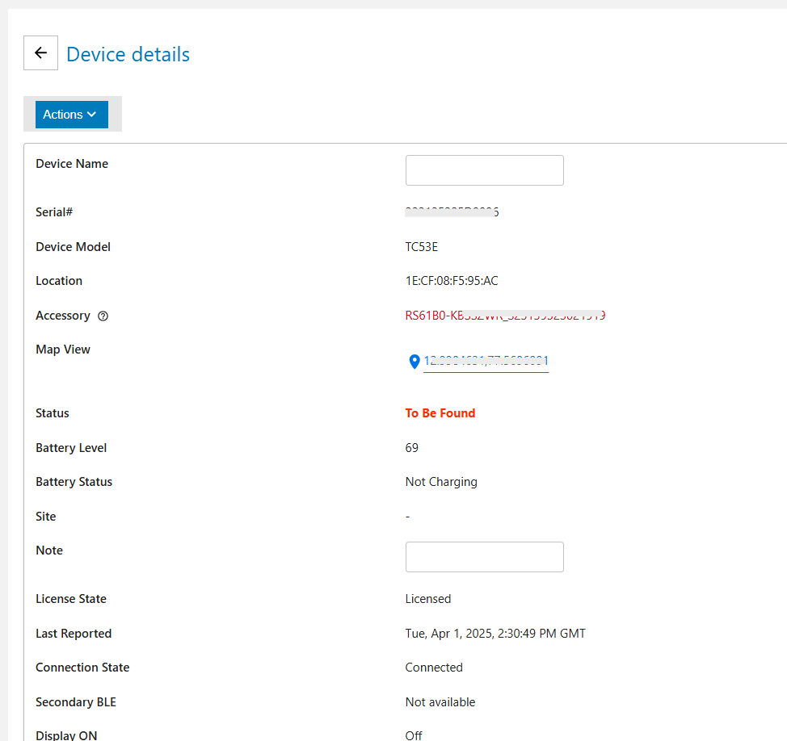 Mobile Devices - Device Details
Device Details includes the following:
- Device Name - Assigned friendly name to the mobile device for ease of identification e.g. based on department or role.
- Serial #- Serial number of the device
- Device Model - Model of the device
- Location - Device location based on last AP connected
- Map View - If Map Based Locationing is enabled, the GPS coordinates are displayed. Click on the GPS coordinates to display a map of the device location.
- Status - One of the following:
- In Service - The device is part of the active device pool and not in any of the other device states
- To Be Found - The device is marked "To Be Found," either by an administrator or manager or through an automation rule, indicating that it is missing. Action should be taken to locate the device.
- Finding - The device search is initiated by a user.
- Found - The device is located after conducting the search.
- Cannot Find - The device could not be found after the search was conducted
- Decommissioned - The device is removed from the active device pool
- Unlicensed - The device is not allocated with a license, therefore the app will not operate.
- Battery Level - The battery level of the device (%).
- Battery Status -
- Charging - Device is connected to a power supply and charging.
- Not Charging - Device is not connected to a power supply.
- Note - Comments or notes entered by an administrator or manager capturing information specific to the device.
- License State - Indicates whether or not the device is allocated with a license:
- Licensed - The device is allocated with a license.
- Unlicensed - The device is not allocated with a license, therefore the app will not operate.
- Last Reported - Time stamp when the device last reported to the server.
- Connection State - Device state based on connection to the server:
- Never connected – The device has never connected to the server.
- Connected – The device is connected to the server.
- Disconnected – The device previously connected to the server and is now disconnected due to no communication with the server for approximately 12 minutes.
- Secondary BLE - Identifies the state of the secondary BLE (Bluetooth Low Energy) beacon:
- Enabled - Enables the secondary BLE beacon if it exists on the device. When the device loses power, the secondary BLE continues to transmit beacons to aid in locating the device.
- Disabled - Secondary BLE beacon capability is disabled, if it exists on the device.
- Not Available - No secondary BLE beacon detected.
- Display ON - Displays true or false if the device is on (may be active) or off (inactive), respectively.
- Checked Out By - If Identity Guardian is in use, it displays the current user that has checked out the device.
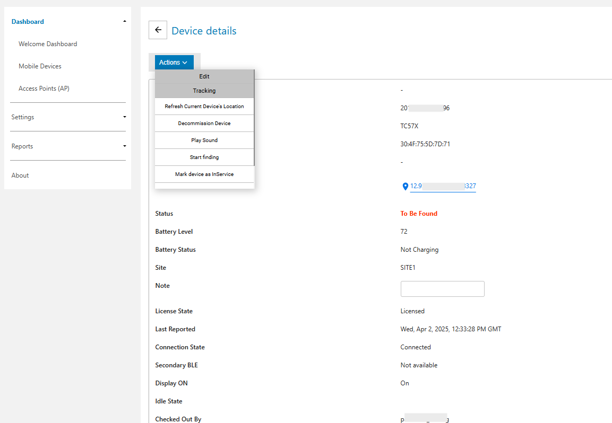 Mobile Devices - Device Details actions
Click Actions button to perform one of the following actions based on the Edit or Tracking category (options may vary depending on the state of the device):
Edit:
- Delete Device - Delete the device record.
Tracking - The availability of these options may vary depending on the current device status:
- Refresh Current Device's Location - Retrieves the current GPS coordinates of the device. Map Based Locationing must be enabled.
- Mark Device for Finding - This changes the device(s) status to To Be Found, placing the device in the To Be Found list used in the device search process.
- Mark Device as InService - The device status is changed from To Be Found back to In Service.
- Add Notes - A dialog box appears prompting to enter notes or comments for the selected device(s).
- Decommission Device - Removes the device(s) from the active device pool and places it out-of-service with the Decommissioned status.
- Play Sound - Remotely play a sound on the lost or missing device to aid in finding it.
- Recommission Device - Changes the device(s) status from the Decommissioned state (i.e. removed from the active device license pool) and recommissions the device back to the In Service state.
- Start Finding - Begins the device search process. Refer to Find a Device. This is visible only if the device is marked To Be Found. During the device search, click one of the following when appropriate:
- Stop Finding - Stops the device search process; changes the state of the device from Being Found back to To Be Found so another device can initiate the finding process.
- Play Sound - Emits a sound from the device being located; listen and follow the sound to locate the device.
- Found - Indicates the device is successfully located after conducting the device search.
- Cannot Find - Indicates the device could not be found after the search was conducted
Map-Based Locationing
When Map Based Locationing is enabled, a Map View column is added to the Mobile Devices dashboard:
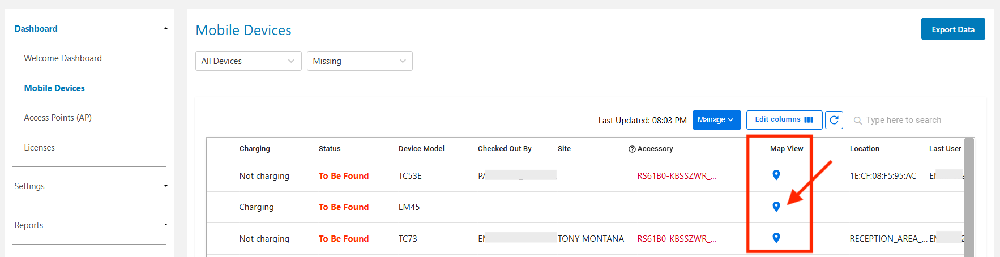
Click on the GPS icon to display the map and last reported coordinates of the device:

Alternatively, the last reported GPS coordinates can be viewed by clicking on the device row within Mobile Devices, which then displays the GPS coordinates in the Device Details screen:
| 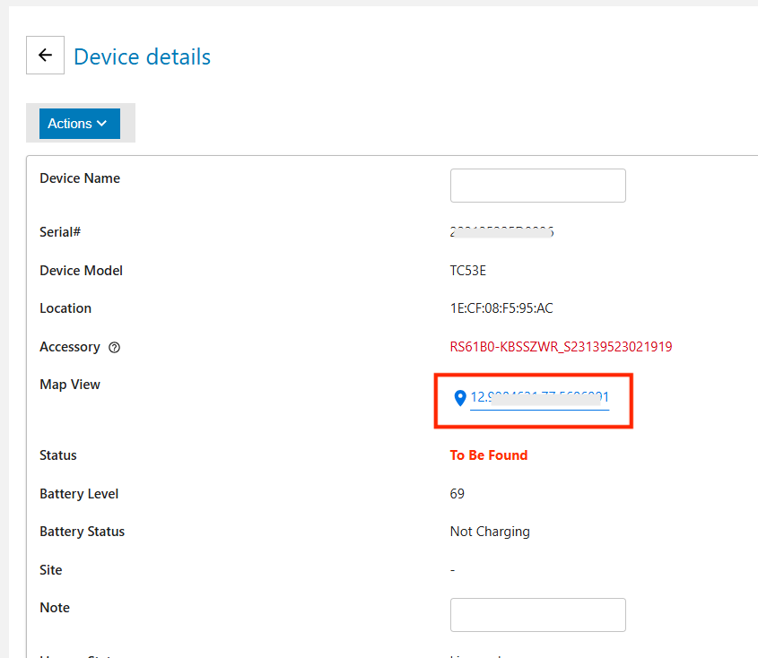 |
Map-Based Locationing is reported or updated when any of the following events occur:
- Device reboot
- Device connects to a network
- Device charging/discharging
- Low battery:
- Low battery threshold is reached on the device as specified in Settings > Automation
- Device battery reaches 18% or lower, then reports again every 2% battery drop
Aside from these event triggers, the manager or administrator can request for the current device's location on-demand in the web portal. This updates the GPS coordinates to the current location. This request is performed either from the Mobile Devices dashboard or the Device Details screen with the action Refresh Current Device's Location.
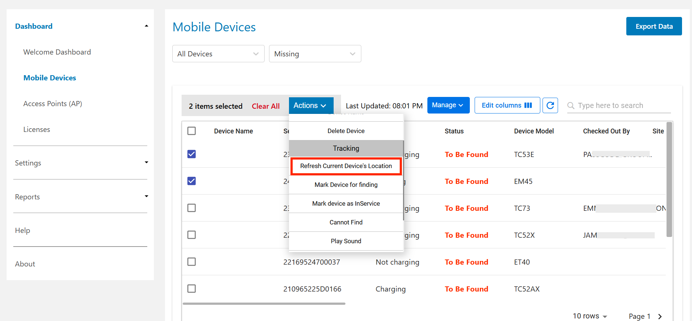
Mobile Devices dashboard - Request for device's location
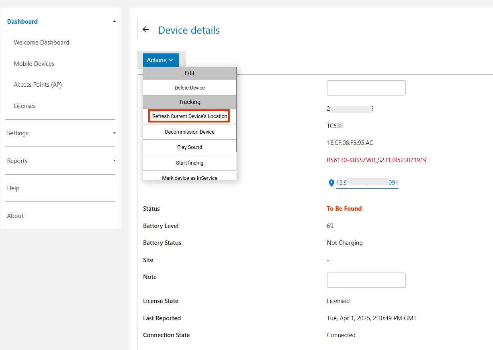
Device Details - Request for device's location
Filter By Site
To filter by site, click the All Sites drop-down and select the desired site or enter a site name in the search field. A limited number of sites are listed. For the full site list, see Sites. 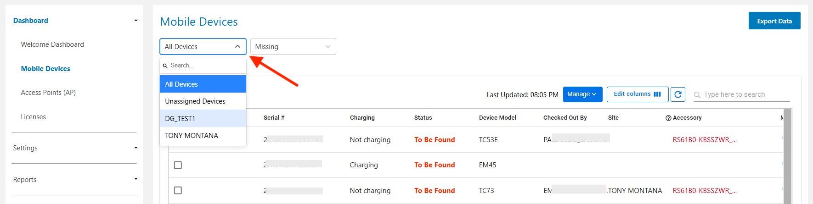 Select Site - Admin Dashboard
Search Device
To perform a device search within the table, click on the search field located in the top right above the device table and enter the text to search based on the option selected: Device Model, Serial #, Device Name, Checked Out Username and Location. 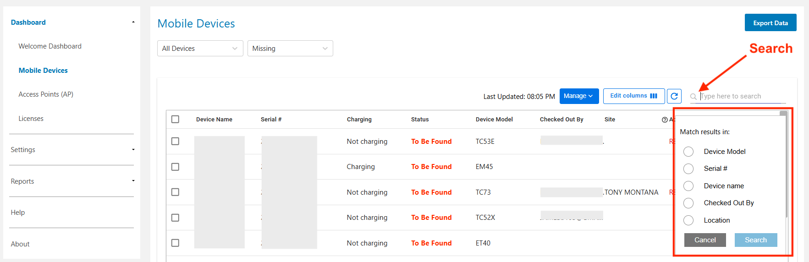 Search Mobile Devices - Admin Dashboard
Export Data
To export data, click Export Data at the top right. Data is exported to a .CSV file.
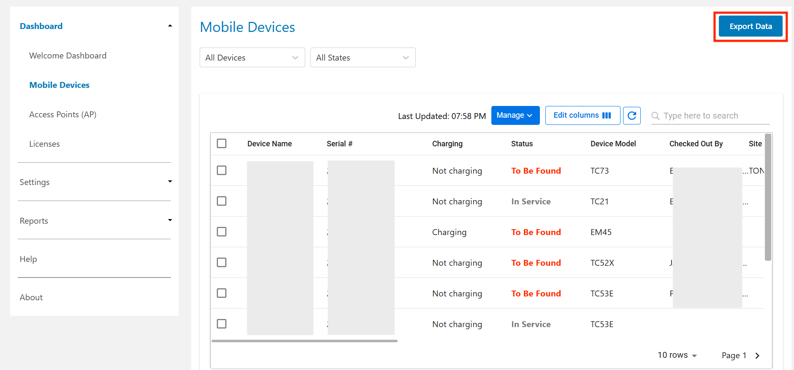 Export Mobile Devices - Admin Dashboard
Access Points
Access Points displays the access point information across All Sites or for a specific selected site. This information includes:
- Site Name - Assigned site registered to the access point
- MAC Address - MAC address of the access point
- Location Friendly Name - User friendly name registered to the access point to aid in identifying the AP location
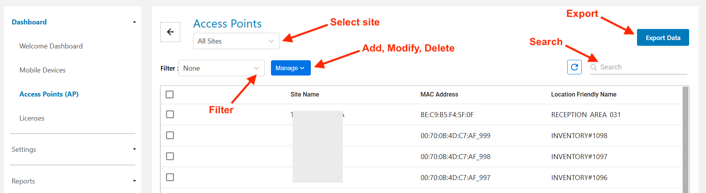 Access Points - Admin Dashboard
Data displayed is based on AP registration. For administrators, information is listed across all sites. To filter by site, click the All Sites drop-down and select the desired site or enter a site name in the search field. A limited number of sites are listed. For the full site list, see Sites.
To add, modify, and delete access points, see Manage Access Points.
Filter AP
By clicking on the Filter drop-down menu, the following options are available:
- Sites not assigned - Lists APs not registered to any site.
- Location friendly names not assigned - Lists APs with no friendly names registered. 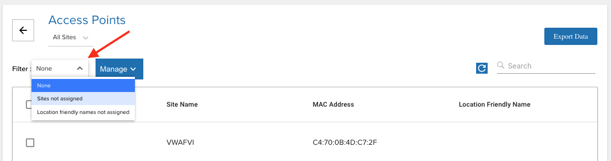 Filter Access Points - Admin Dashboard
Search AP
To conduct a search for APs, click the search field located at the top right and perform a search based on:
MAC Address
Friendly Name
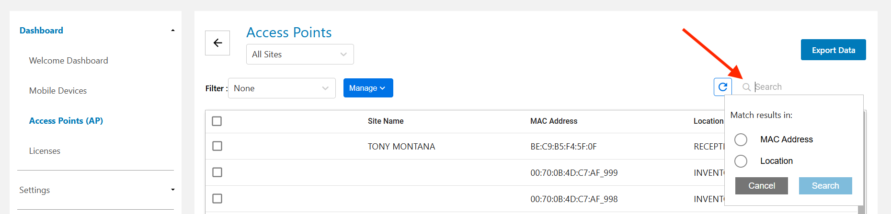 Search Access Points - Admin Dashboard
Export Data
To export data, click Export Data at the top right. Data is exported to a .CSV file.
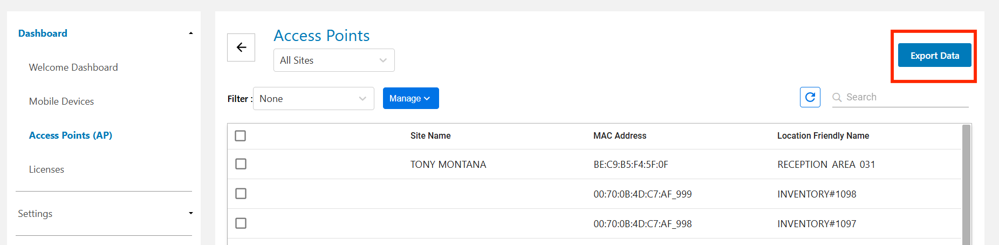 Export Access Points - Admin Dashboard
Licenses
Device Guardian uses the floating license model - licenses are shared among devices from a combined license pool regardless of expiration date. If a license is available, the Device Guardian server allocates a license to the device. When a license is no longer needed, the license is released from the device and returned to the license pool to make available to other devices. Licenses are monitored from License Summary.
After a license expires or when a device is recommissioned, it is automatically allocated a license if available. Administrators can perform the following:
- Monitor licenses.
- Transfer a license from one device to another.
- Remove a license.
To procure licenses, see the License section.
View Licenses
To view license information:
From the administrator dashboard, tap License Summary in the left menu under Dashboard.
Two types of licenses are displayed: Mobile Device and Accessory (such as Bluetooth scanners). The following information is provided for each based on unexpired licenses:
- Total licenses - total number of licenses that have been purchased
- Total licenses available - number of licenses that are available and can be allocated to devices
- Total licenses consumed - number of licenses allocated to devices
- List of licenses shows the License Count and Expiration Date of current licenses. This data is static and removed from the list after the expiration date is surpassed.
- Sync Licenses button refreshes license data on-demand and synchronizes with the Zebra Enterprise Software Licensing system. The license information is updated once each day. The time stamp displayed beside this button indicates the date and time when the license data last synchronized from the licensing server to the web portal.
- Release Licenses - applies to Accessory Licenses. This option allows the administrator to release, or decommision, the license for specific accessory devices. To release a license from an accessory device:
a. Create a .CSV file containing a header row with column names, followed by data rows listing the model number and serial number for each of your devices. For example:
ModelNumber,SerialNumber RS61B0-KBSSZWR,S123456789b. Click Release Licenses from License Summary.
c. Drag the .CSV file or select the file to upload. Click Import.
d. A message appears indicating the import was successful.
e. Click Sync Licenses. The number of Available licenses is incremented and the number of Consumed licenses is decremented.- Total licenses - total number of licenses that have been purchased
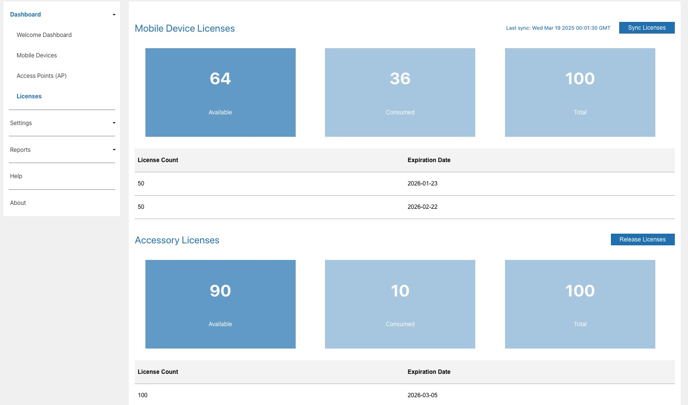
License Summary in web portal
License Transfer
Device Guardian supports the transfer of licenses from one device to another by returning the active license to the license pool and reallocating it to a new device. The active license can be released from the device by decommissioning the device or by deleting the device. After the device is decommissioned or deleted, a message appears indicating the device it not licensed. To license the new device, after it communicates with the Device Guardian server it is allocated with the newly released license. The new license allocation is reflected in the License Summary.
Automatic License Renewal
After reaching the expiration date, the license is automatically deallocated from the device and a message is displayed on the device indicating the license has expired. If any licenses are available, the Device Guardian server automatically allocates a license to the device for continued, uninterrupted operation. The newly allocated license is reflected in the License Summary.
Recommission Devices
For devices being recommissioned to place back into service as an active device, if a license is available, the server allocates a license to the device. After the device is licensed, Device Guardian is operational on the device and the allocated license is reflected in the License Summary. If a license is not available, the device remains in the decommissioned state and a note is automatically added indicating there is no license available. This note overwrites any pre-existing note. When a license is available, the admin or manager must recommission the device to allocate the license and manually delete the note.
License Removal
Device Guardian licenses can be removed by decommissioning the device or by deleting the device from Device Guardian. When a device is decommissioned or deleted, the license is automatically removed from the device, as reflected in the License Summary. Device Guardian is no longer operational on the device until it is relicensed.
Important Notes
Important information pertaining to Device Guardian licensing:
- License allocation and deallocation is based on enrollment to the Device Guardian server, regardless of the connection state (disconnected or connected) seen from the device dashboard.
- Never Connected devices are not licensed.
- Due to a constraint from Google Firebase, an attempt to activate licenses on more than 5,000 devices within a span of 5 minutes can result in a denial of licenses to devices. Zebra strongly recommends limiting license activation to a maximum of 5,000 devices within 5 minutes. To circumvent Google’s constraint:
- Device Guardian automatically synchronizes once every 4 hours to allocate licenses to devices.
- Device Guardian administrators can manually trigger license synchronization by using the Sync Licenses button in the License Summary screen on the Device Guardian web portal.
- When allocating licenses to unlicensed devices, license allocation is based on license availabilty and the enroll time with the server. Methods for license allocation:
- Device Guardian automatically synchronizes once every 4 hours to allocate licenses to devices.
- Device Guardian administrators can manually trigger license synchronization by using the Sync Licenses button in the License Summary screen on the Device Guardian web portal.
Manager Dashboard
Welcome Dashboard
The Welcome Dashboard presents a graphical overview of missing and found devices at both company-wide and individual site levels, license information, and access to the latest release notes.
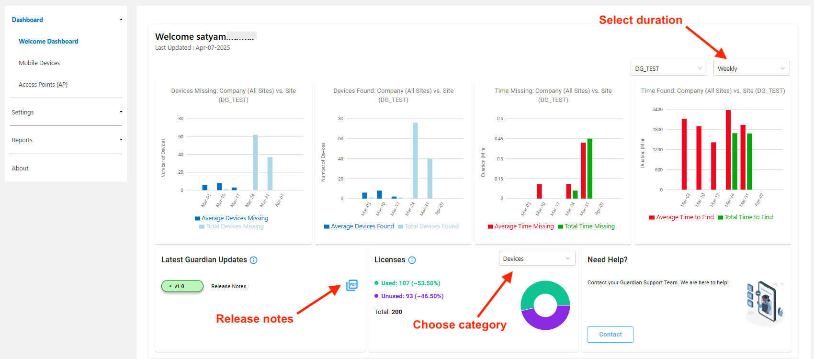 Manager Dashboard
Graphs - Provides a snapshot of Device Guardian's effectiveness, illustrating the speed of device recovery and the number of lost devices successfully located, based on the manager's assigned site and the selected time period:
- Time Frames:
- Weekly - Displays data from the past 6 weeks on a weekly basis, up to the day before the current date. Each data point represents a distinct week within this timeframe.
- Monthly - Displays data from the past 6 months on a monthly basis, up to the day before the current date. Each data point represents a distinct month within this timeframe.
- Graph Details:
- Graphs 1 and 2 - Shows trends for the quantity of missing (Graph 1) and found (Graph 2) devices at both the overall company level and individual site level. This allows for a comparison of a site's performance against the company average when a site is selected. Hover over the data to view the specific quantity for each.
- Graphs 3 and 4 - Displays trends for the average duration devices remain missing (Graph 3) and the average duration to locate a device (Graph 4). A device is considered missing from the moment it is marked "To Be Found" until it transitions to another state (e.g. "Found"). The duration to find a device begins when "Start Finding" is selected and ends when the device is found. Hover over the data to view the specific time (in minutes) for each.
Latest Guardian Updates - Shows the latest 3 versions of Device Guardian along with access to their release notes. Click the .PDF icon for the corresponding version to view the release notes.
Licenses - Displays a donut chart showing Used, Unused, and Total licenses available. The dropdown menu filters by license type:
- Devices - Mobile devices and kiosks.
- Accessories - Accessories that connect to mobile devices, such as Bluetooth scanners.
Need Help - Offers quick access to support resources. The Contact button opens the Device Guardian support contact page.
Mobile Devices
Mobile Devices displays the Devices Summary followed by a table of devices that provides access to device information details.
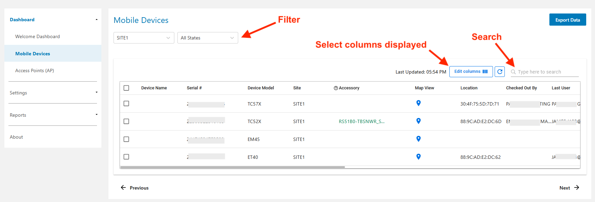 Manager Dashboard - Mobile Devices
The table shows the list of all devices from the assigned site with the following information:
- Device Name - Assigned friendly name to the mobile device for ease of identification e.g. based on department or role.
- Serial # - Serial number of the mobile device.
- Device Model - Model number of the device.
- Site - Assigned site of the mobile device.
- Accessory - Model name and serial number of the accessory (e.g. Bluetooth scanner) separated by an underscore (_). Track Bluetooth Scanners must be enabled under Settings. The text color indicates the accessory status in relation to the mobile device:
- Green - The accessory is paired and connected to the device.
- Red - The accessory is paired but disconnected from the device. This can occur in any of the following scenarios: the accessory is idle, the device or accessory is rebooted, or the accessory disconnects from the device.
- Black - The accessory was previously paired and connected with the device but is no longer paired and connected, e.g. when the accessory is placed on a charged cradle. As a result of being unpaired, the accessory is removed from the My Bluetooth Scanner section of the device client app.
- Map View - A GPS pin icon is displayed if the GPS device location is known. Click on the pin icon to display the GPS coordinates and mapped location of the device.
- Location - Device location based on the access point (AP) it is connected to. Displays either the AP friendly name or MAC address (if AP friendly name is not assigned)
- Checked Out By - If Identity Guardian is in use, it displays the current user that checked out the device.
- Last Used By - Last user that checked out the device, if Identity Guardian is in use.
- Status - Status of the mobile device: In Service, To Be Found, Finding, Found, Cannot Find, Decommissioned, Unlicensed
- Connection - Connected (device is connected to the server) or Not Connected (device previously connected to the server and is now disconnected due to no communication with the server for approximately 12 minutes or longer)
- Battery % - Current battery level of the mobile device.
- Charging - Charging (device is connected to a power supply and charging) or Not Charging (device is not connected to a power supply).
- Last Check In - The elapsed time since the last device check-in, if Identity Guardian is in use.
- Checked Out At - Time stamp when the device was last checked out, if Identity Guardian is in use.
- Last Reported - Time stamp the device last reported to the server.
Select a single device from the devices table to display the Device Details.
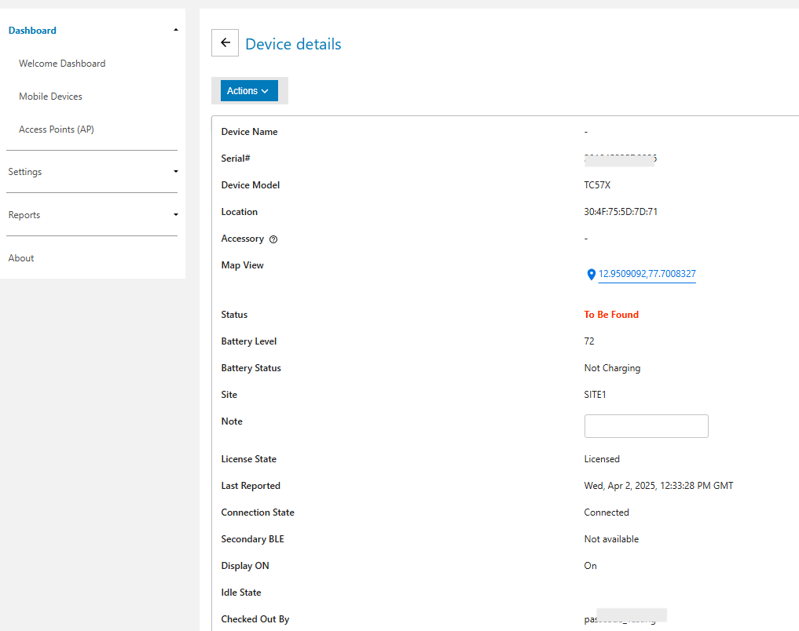 Mobile Device Details - Manager Dashboard
Device Details provides the following:
- Device Name - Assigned friendly name to the mobile device for ease of identification e.g. based on department or role.
- Serial #- Serial number of the device
- Device Model - Model of the device
- Location - Device location based on last AP connected
- Status - One of the following:
- In Service - The device is part of the active device pool and not in any of the other device states
- To Be Found - The device is marked "To Be Found," either by an administrator or manager or through an automation rule, indicating that it is missing. Action should be taken to locate the device.
- Finding - The device search is initiated by a user.
- Found - The device is located after conducting the search.
- Cannot Find - The device could not be found after the search was conducted
- Decommissioned - The device is removed from the active device pool
- Unlicensed - The device is not allocated with a license, therefore the app will not operate.
- Battery Level - The battery level of the device (%).
- Battery Status:
- Charging - Device is connected to a power supply and charging.
- Not Charging - Device is not connected to a power supply.
- Note - Comments or notes entered by an administrator or manager capturing information specific to the device.
- License State - Indicates whether or not the device is allocated with a license:
- Licensed - The device is allocated with a license.
- Unlicensed - The device is not allocated with a license, therefore the app will not operate.
- Last Reported - Time stamp when the device last reported to the server.
- Connection State - Device state based on connection to the server:
- Never connected – The device has never connected to the server.
- Connected – The device is connected to the server.
- Disconnected – The device previously connected to the server and is now disconnected due to no communication with the server for approximately 12 minutes.
- Secondary BLE - Identifies the state of the secondary BLE (Bluetooth Low Energy) beacon:
- Enabled - Enables the secondary BLE beacon if it exists on the device. When the device loses power, the secondary BLE continues to transmit beacons to aid in locating the device.
- Disabled - Secondary BLE beacon capability is disabled, if it exists on the device.
- Not Available - No secondary BLE beacon detected.
- Display ON - Displays true or false if the device is on (may be active) or off (inactive), respectively.
- Checked Out By - If Identity Guardian is in use, it displays the current user that has checked out the device.
To add, modify, and delete devices, see Manage Devices.
Track Devices
To take action to track devices, click the Actions button and select one of the following (options may vary depending on the state of the device):
Tracking - The availability of these options may vary depending on the current device status:
- Refresh Current Device's Location - Retrieves the current GPS coordinates of the device. Map Based Locationing must be enabled.
- Mark Device for Finding - This changes the device(s) status to To Be Found, placing the device in the To Be Found list used in the device search process.
- Mark Device as InService - The device status is changed from To Be Found back to In Service.
- Cannot Find - Indicates the device could not be found after the search was conducted.
- Play Sound - Remotely play a sound on the lost or missing device to aid in finding it.
- Add Notes - A dialog box appears prompting to enter notes or comments for the selected device(s).
- Recommission Device - Changes the device(s) status from the Decommissioned state (i.e. removed from the active device license pool) and recommissions the device back to the In Service state.
- Decommission Device - Removes the device(s) from the active device pool and places it out-of-service with the Decommissioned status.
The Actions menu is accessible from the Mobile Devices screen after selecting a device or from the Device Details screen.
Manager access to actions from device selection in Mobile Devices
Manager access to actions from Device Details
Search Devices
To search for a device in the table, click the search field located in the top right above the device table and enter the text to search based on Device Model, Serial Number, Device Friendly Name, Checked Out Username and Location. 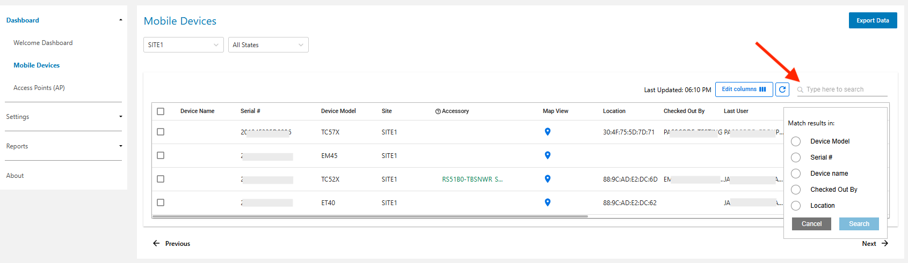 Mobile Devices Search - Manager Dashboard
Modify Name
Managers can modify a device name if the option Allow managers to modify device name is enabled from the Registration settings. The device name is modified either manually (for a single device change) or by uploading the CSV file containing the updated information (for multiple device changes).
Manual
To modify the device name manually:
- Login to the web portal as a manager.
- From the left menu, under Dashboard select Mobile Devices.
- Select the device to modify its name. Click Actions > Device Name. 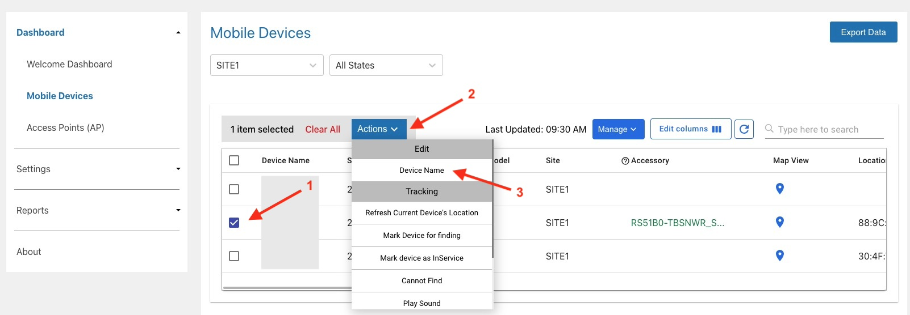
- Enter the new device name.

- Click Confirm. The device name is changed.
CSV Upload
To modify the device name, create a .CSV containing the updated device name(s) and perform the following steps:
- Login to the web portal as a manager.
- From the left menu, under Dashboard select Mobile Devices.
- Click the Manage button and select Modify. 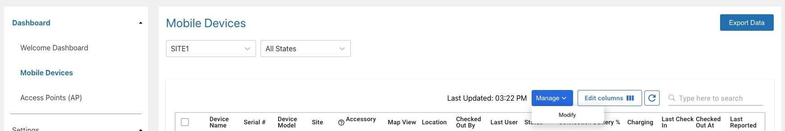
- Click Select file and browse to the desired .CSV file, or drag and drop the .CSV file.
- The selected file name is displayed. Click Import.
- If successful, a message appears indicating the import was successful.
Export Data
To export data, click Export Data at the top right. Data is exported to a .CSV file.
Access Points
Access Points displays the access point information for APs within the assigned site (based on AP registration:
Site Name - Assigned site registered to the access point.
MAC Address - Associated MAC address of the access point.
Location Friendly Name - Friendly name registered to the access point to aid in identifying the AP location.
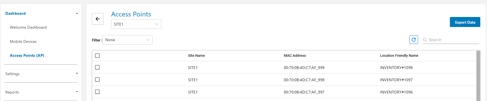 Access Points - Manager Dashboard
To add, modify, and delete access points, see Manage Access Points.
Filter
Click the Filter drop-down menu to filter based on Location friendly names not assigned, listing APs with no friendly names registered. Action can further be taken to assign a friendly name to aid in identifying the AP location.
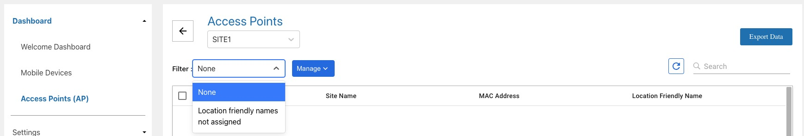 Access Points Filter - Manager Dashboard
Search
To conduct a search for APs, click the search field located at the top right and perform a search based on MAC Address or Location.
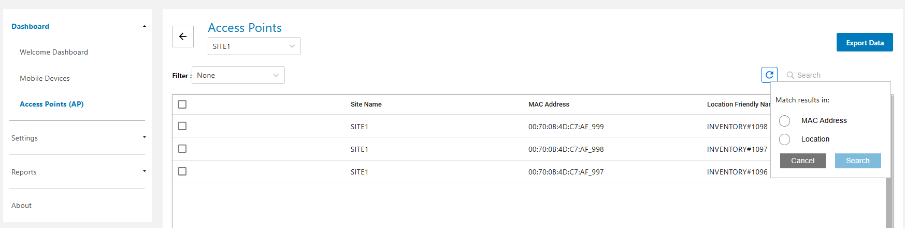 Access Points Search - Manager Dashboard
Export Data
To export data, click Export Data at the top right. Data is exported to a .CSV file.
Device Dashboard
Within the Device Dashboard, users and associates can seamlessly locate devices through a user-friendly interface, while administrators and managers have access to features that provide effective oversight and management of device operations.
User/Associate
When a user or associate opens Device Guardian, the main screen is displayed, as shown in the first image below. The second image shows the Device Details that appear after tapping on a device card.
| 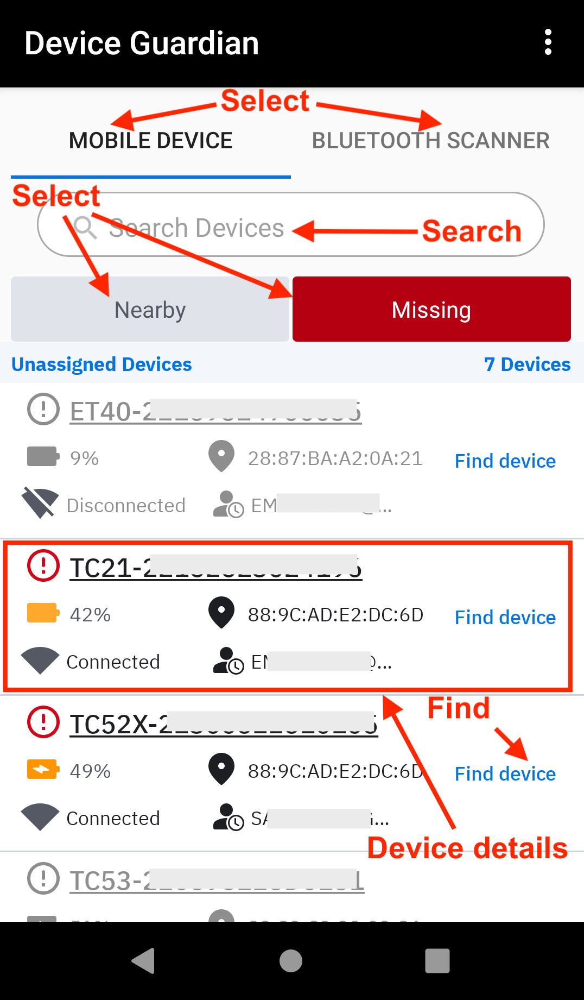 | 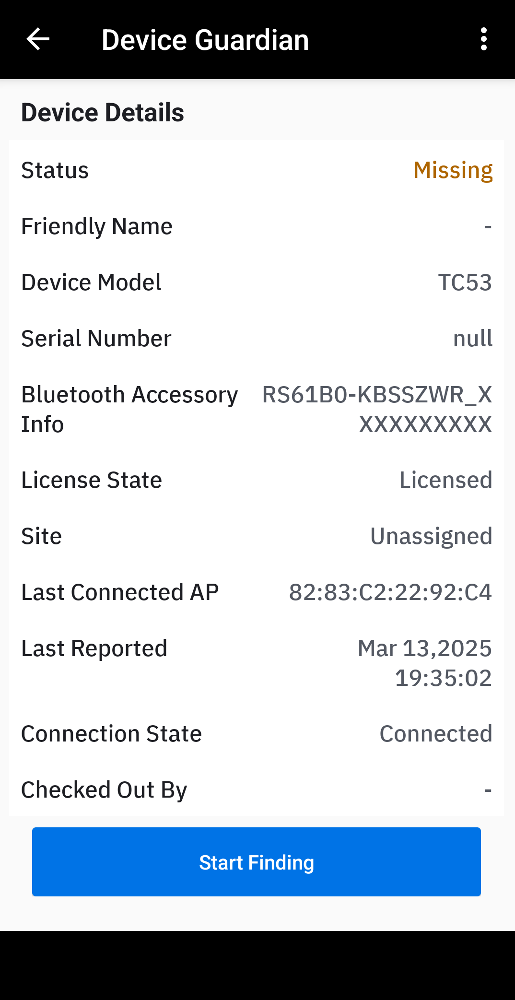 | |
| Main screen - guide for end user | Device Details |
Main screen features:
- Tabs:
- Mobile Device - Displayed by default, providing a list of mobile devices relevant to the selected filter button: Nearby or Missing.
- Bluetooth Scanner - Visible if Bluetooth Scanner Tracking is enabled, displaying the list of Bluetooth Scanners.
- Search - Enter the device to search based on user ID, device friendly name, model number, serial number, AP friendly name, or MAC address.
- Filter Buttons:
- Nearby - Visible if Lost Devices Nearby is enabled, showing missing devices in close vicinity.
- Missing - Displays missing devices, those marked "To Be Found", with the option to find the device. Tapping on the device card displays the device details, including the option to find the device.
Administrator/Manager
An Administrator or Manager must login to access the relevant features and functions related to their role.
To login to the client app as an administrator or manager:
Launch the Device Guardian app.
Tap the options menu at the top right and select Admin/Manager Sign in. 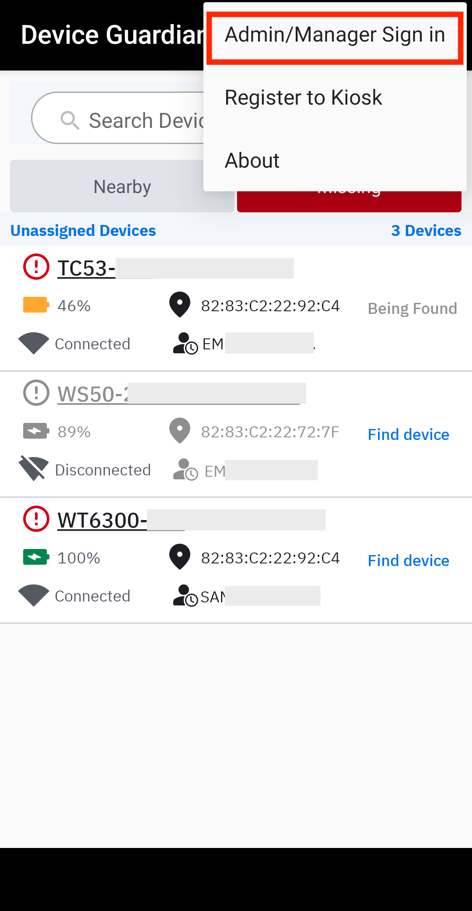
The options menu includes the following selections:
- Admin/Manager Sign In – Signs in the administrator or manager.
- Register to Kiosk - Applies to Device Guardian Access Management; see Register Device to Kiosk.
- Settings – Provides information and options:
- Import Access Points/Sites/Devices - Import data for access points, sites and devices to aid in locating devices; see Site, Access Point, and Device Data.
- Device Friendly Name – Displays the user-friendly name assigned to the device.
- Site Name – Displays the friendly name assigned to the site location.
- About - Displays the app version.
Enter the administrator/manager login credentials or scan the barcode for the username and password.
The dashboard is displayed.
| 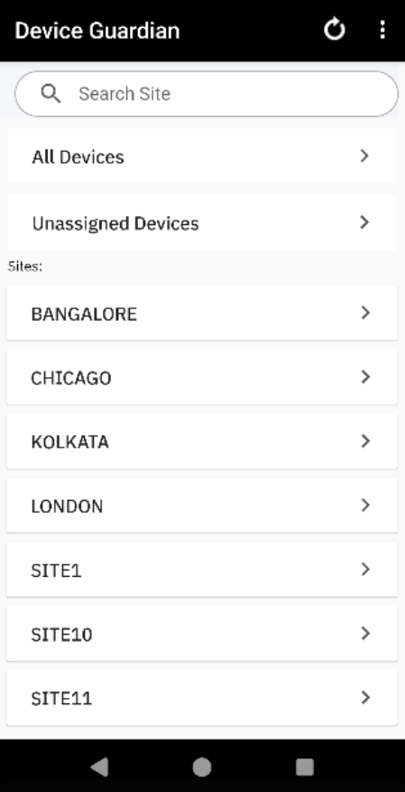 | 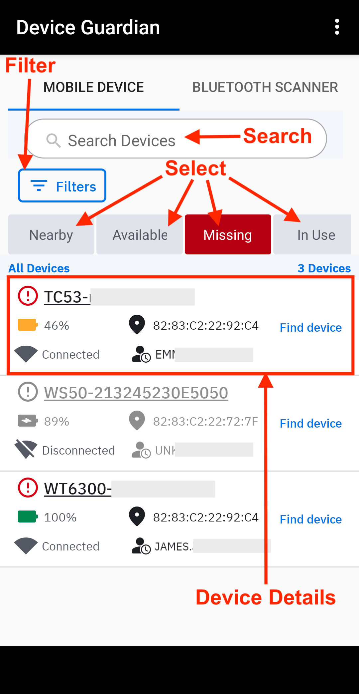 | |
| Admin - View all sites | Admin/Manager - Main screen |
Administrators - Tap on a site or category (seen from the first image above) to display the corresponding list of devices (seen from the second image above). Categories from the site list:
- All Devices – Displays all devices, regardless of whether they are assigned to a site, across the entire organization.
- Unassigned Devices – Displays devices that are not currently assigned to any site.
- Sites - Lists all sites within the organization. Select an individual site to display the device list specific to that site.
Administrators and Managers - Main screen features:
- Tabs:
- Mobile Device - Displayed by default, provides a list of mobile devices relevant to the selected filter button: Nearby or Missing.
- Bluetooth Scanner - Visible if Bluetooth Scanner Tracking is enabled, displays the list of Bluetooth Scanners.
- Search - Enter the device details to search by user ID, device friendly name, model number, serial number, AP friendly name, or MAC address.
- Filter Buttons:
- Nearby - Visible if Lost Devices Nearby is enabled, shows missing devices in close proximity.
- Available - Devices with no user currently signed in, ready for a user to sign in.
- Missing - Devices whose location is currently unknown, marked as "To Be Found," with an option available to find the device.
- In Use - Devices where users have been authenticated.
Tapping on the device card displays the Device Details. If this action is performed from the Missing device list, an option is included to find the device.
To logout as an administrator or manager: Tap the options menu at the top right and select Admin/Manager Logout. 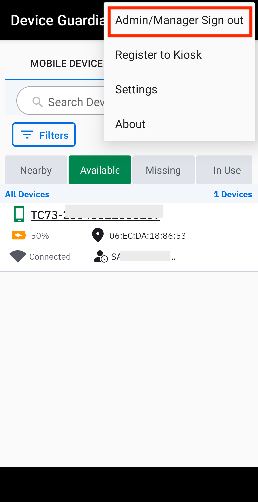
Device Information
The device list displays all devices corresponding to the selected filter button on the dashboard.
Search results are limited to display 300 records. If this limit is exceeded, a message is displayed below the device list indicating that additional records exist and suggesting that the search should be refined to stay within the limit.
Each individual device is represented as a “device card,” displaying the following information:
- Device friendly name (if unavailable, the device model and serial number)
- AP friendly name (if available) or BSSID
- Battery percentage level
- Wi-Fi connectivity state to the access point (AP):
- Connected - The device is connected to the AP
- Disconnected - A Wi-Fi icon with a slash indicates the device is not connected to the AP.
- User Name
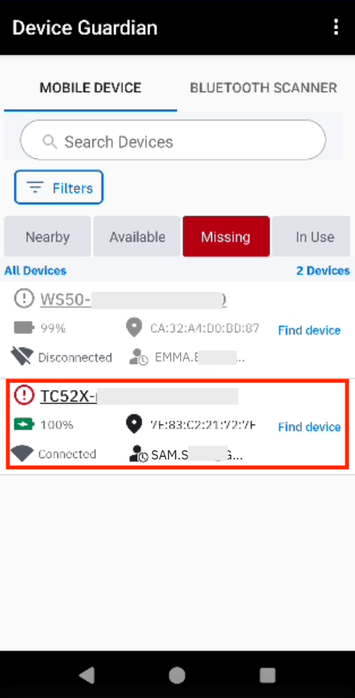
Tap and hold on any device card to display the available device actions:
- View Details – Displays the Device Details screen.
- Add a Note – Enter comments specific to the device that may aid in tracking. For example, if a device is decommissioned, a note can be added as follows: “Battery does not charge, needs to be replaced."
- Start Finding – Begins the device search process; refer to Find a Device. This is visible only if the device is marked To Be Found.
- Recommission – Moves a device from the decommissioned state back to the In Service state as part of the active device pool.
- Decommission – Removes the device from the active device pool and marks it as out-of-service. This can be used when a device is undergoing repair or is deprecated and no longer in use.
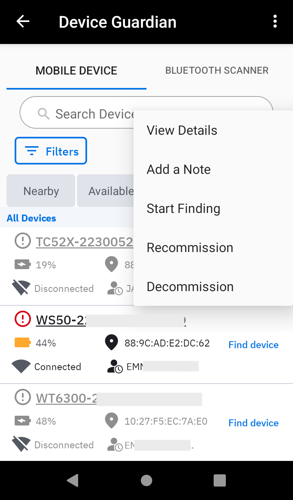
Device action menu
Device Details
Tap on any device card to display the Device Details screen:
Device Status:
- In Service – Device is part of the active device pool and not in any of the other device states.
- To Be Found – The device is marked "To Be Found," either by an administrator or manager or through an automation rule, indicating that it is missing. Action should be taken to locate the device.
- Finding – Another user initiated the search for the device.
- Found – The device was successfully located after a search.
- Cannot Find – The device could not be located despite the search efforts.
- Decommissioned – The device is removed from the active device pool.
- Unlicensed - The device is not allocated with a license, preventing the app from operating.
Friendly name – The assigned friendly name of the device as registered by the administrator.
Device Model – The model of the device.
Serial Number – The serial number of the device.
License State:
- Licensed - The device has an allocated license.
- Unlicensed - The device does not have an allocated license, preventing the app from operating.
Site – The assigned friendly name for the site as registered by the administrator. If unassigned, it is blank.
Last Connected AP – The access point the device was last connected to, aiding in identifying the device location.
Last Reported – The time stamp of the last time the device reported to the server.
Connection State:
- Never connected – The device has never connected to the server.
- Connected – The device is currently connected to the server.
- Disconnected – The device was previously connected but has been disconnected for at least approximately 12 minutes due to lack of communication with the server.
Checked Out By - The user that signed into the device, if authenticated by Identity Guardian.
Secondary BLE: Identifies the state of the secondary BLE (Bluetooth Low Energy) beacon:
- Enabled - The device has secondary BLE beacon capability, and beaconing is enabled. When the device loses power, the secondary BLE continues to transmit beacons to aid in locating the device.
- Disabled - The device has secondary BLE beacon capability, and beaconing is disabled.
- Not Available - No secondary BLE beacon detected.
Battery Level – Displays the battery level (high, medium, or low) along with the percent (%) of battery remaining:
- High – Battery level is greater than 66%.
- Medium – Battery level ranges fom 15% to 66%.
- Low – Battery level is less than or equal to 15%.
Battery Status:
- Charging – The device is charging while plugged to a power source.
- Not Charging – The device is not plugged to a power source.
Display On – Displays “true” or “false”. "True" means the device display is on and may be in active use; "false" means the device display is off, indicating inactivity.
Note – Text entered by an administrator or manager capturing specific information related to the device.
Device details information
Device/Site Search
Two types of searches can be performed:
- Search by site
- Search by device
Search By Site
Administrators can search for a site in the site list. A site search performs a partial search for the characters entered in the search field. The search results display matches that include the characters being searched for within the site name.
To perform a site search:
From the administrator's site list, enter the site to search in the search field. The results are displayed. 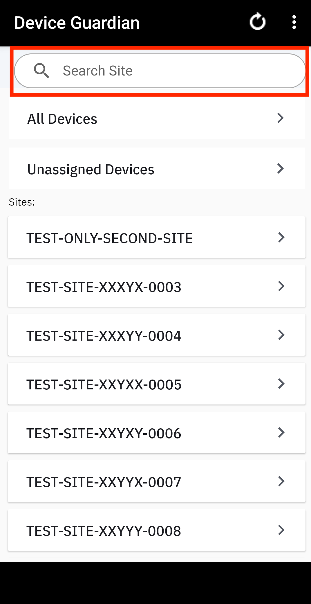
Search by Device
A device search returns a list of devices that match the keyword entered based on the criteria selected: device friendly name, device model, serial number, or AP friendly name. The search result is limited to display 100 records. If this limit is exceeded, a message is displayed below the device list indicating that there are additional records and the search should be refined to avoid exceeding the limit.
To perform a device search:
From the device list, enter the device to search in the search field. The results are displayed. 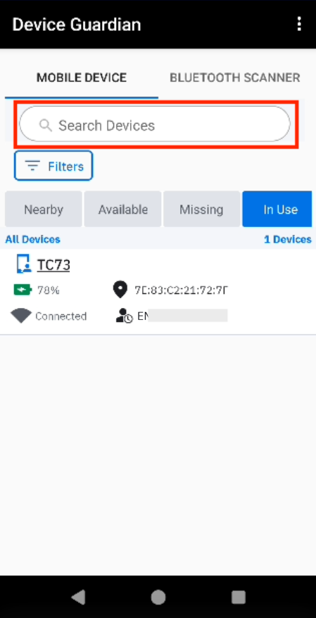Site search field
Reports
Reports are provided in the web portal for administrators to monitor device performance, user activity and site activity. Administrators can designate managers or others to receive End of Day Device Summary reports by email.
All data reports are logged in America/Chicago time (CST). If multiple days are selected for the report, the report is provided in a single .ZIP file containing multiple .CSV files, one .CSV file per day. If the data report exceeds 1 GB in size for any day, the report is split into multiple files. Data history remains for up to 3 months.
Events By Site
Events By Site provides a report of event changes within a site based on the transition of device states (e.g. disconnected, found, not found, low battery, etc.) when moving from one state to another. A single date or date range may be selected for the report. The site report can be exported as a CSV file. Administrators can view data based on site location or display data across all sites. Managers can view data based on their assigned site.
An event is a transition from one device state to another, regardless of the duration the device remains in the new state. The events for this report are based on the device finding process, device charging, low battery and connection state. The device count for the states are cumulative, incrementing each time a device reaches that state. Data is collected each day at 3 am based on the local site time zone.
To view Events By Site:
- Login to the web portal as an administrator.
- Click Reports in the left menu and click Events By Site.
- In the Site dropdown, select the specific site for which to generate the report, or select All to generate a report for all sites.
- Select the start date and end date to generate the report.
- The data is displayed.
- To download the displayed data in .CSV format, click Export Data.
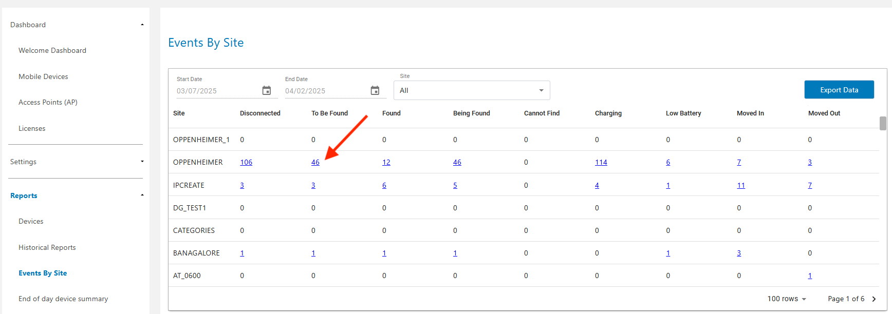
Data displayed (Note: All device counts are cumulative):
- Disconnected – Number of devices that lost connection to the server at one point in time for at least 12 minutes or more
- To Be Found – Number of devices that were marked "To Be Found," indicating a device search can be initiated; this provides an indication on how often devices are becoming missing at a site
- Found – Number of devices that are successfully found after a device search
- Being Found – Number of devices that are being searched; this is triggered when a user initiates a device search
- Cannot Find – Number of devices that could not be found after a search was conducted
- Charging – Number of devices that are powered on and in the charging state
- Low Battery – Number of devices that have reached the low power threshold, requiring attention for it to be charged prior to battery depletion
- Moved In - Number of devices that were transferred into the site
- Moved Out - Number of devices that were transferred out of the site
To view event and device details, click on the device count link in the table. The device details include: time stamp, device model, serial number, device name, user, AP location, connection state (connected/not connected), battery %, charging state (charging/not charging), and site.
Details for To Be Found and Found states additionally include:
- Breakdown of automatic vs manual events based on device state - specifies whether the event was automatically (via automation rules) or manually triggered (e.g. user changes states during the finding process), categorized by device state transition
- List of events based on how the device was flagged as To Be Found or Found. This provides insight into the events that led to the device state.
- Average time - average time elapsed across all devices based on one of the following device states:
- To Be Found - duration of time while the device is in the To Be Found state
- Found - duration of time while a device in the Being Found state transitions to Found state
- Total time - total time elapsed across all devices based on one of the following device states:
- To Be Found - duration of time while the device is in the To Be Found state
- Found - duration of time while a device in the Being Found state transitions to Found state
Details for Moved In and Moved Out additionally include:
- Moved In:
- Current site - site where device is currently located
- First seen - timestamp indicating when the device was moved to the current site
- Status - device status (To Be Found, Being Found, etc.) when the device was moved into the current site
- Checked Out By - user who checked out the device during its movement into the current site, if Identity Guardian is in use
- Last Site - previous site from where the device moved from
- Last Seen - timestamp indicating when the device was last seen in the previous site
- Status - device status (To Be Found, Being Found, etc.) when the device was moved out of the previous site
- Checked Out By - user who checked out the device during its movement out of the previous site, if Identity Guardian is in use
- Moved Out:
- Last site - previous site from where the device moved from
- Last Seen - timestamp indicating when the device was last seen in the previous site
- Status - device status (To Be Found, Being Found, etc.) when the device was moved out of the previous site
- Checked Out By - user who checked out the device during its movement out of the previous site, if Identity Guardian is in use
- Current site - site where device is currently located
- First seen - timestamp indicating when the device was moved to the current site
- Status - device status (To Be Found, Being Found, etc.) when the device was moved into the current site
- Checked Out By - user who checked out the device during its movement into the current site, if Identity Guardian is in use
- Last Site - previous site the device moved from
End of Day Device Summary
End of Day Device Summary provides a snapshot of device counts based on their state at that moment in time (e.g. disconnected, found, not found, low battery, etc.). The data is not cumulative (aside from the Connected Accessories total count). This summary report helps to identify and track the accountability of devices at the end of the day on a daily basis. From the web portal, administrators can display data based on site location or display data across all sites.
End of Day Device Summary reports can be sent by email to administrators, managers or other users. The following options are configured either manually or through .CSV file import: email subscription, scheduled report time, email recipients, report option (based on device states), and option to include email attachments. The report is emailed daily at the predefined report time and is sent from email address zdtrksupport@zebra.com to the listed email recipients. The email contains a summary list showing the count of devices meeting each selected reporting option. Following this summary list are separate tables providing details on each device. If email attachments are enabled in the report settings, individual .CSV files containing device data are attached to the email per the selected report option. Each site can be configured with different scheduled report times. Data is not available for the current date until the scheduled report time elapses.
To view End of Day Device Summary:
- Login to the web portal as an administrator.
- Click Reports in the left menu and click End of Day Device Summary.
- In the Site dropdown, select the specific site for which to generate the report, or select All to generate a report for all sites.
- Select the date to generate the report.
- The data is displayed.
- To download the displayed data in .CSV format, click Export Data. 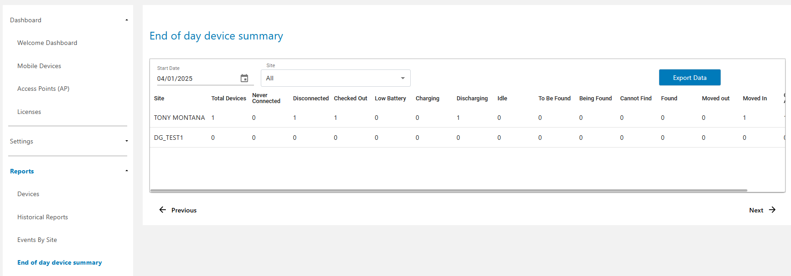
Data displayed:
- Site - Name of site
- Total Devices - Number of devices registered with the cloud server at the site
- Never Connected - Number of devices that have never connected to the server
- Disconnected - Number of devices that lost connection to the server
- Checked Out - Number of devices checked out by users (with Identity Guardian) and presumed to be in use
- Low Battery - Number of devices that have reached the low power threshold, requiring attention for it to be charged prior to battery depletion.
- Charging - Number of devices charging
- Discharging - Number of devices discharging
- Idle - Number of devices that are not charging and are in the idle state i.e. have not been moved for the duration of the Device Idle threshold
- To Be Found - Number of devices set to "To Be Found" to initiate the finding process
- Being Found - Number of devices in the process of being found
- Cannot Find - Number of devices that could not be found
- Found - Number of devices that were lost or missing, then found
- Moved Out - Number of devices transferred out of the site
- Moved In - Number of devices transferred into the site
- Connected Accessories - Total number of accessories connected to the device in a day